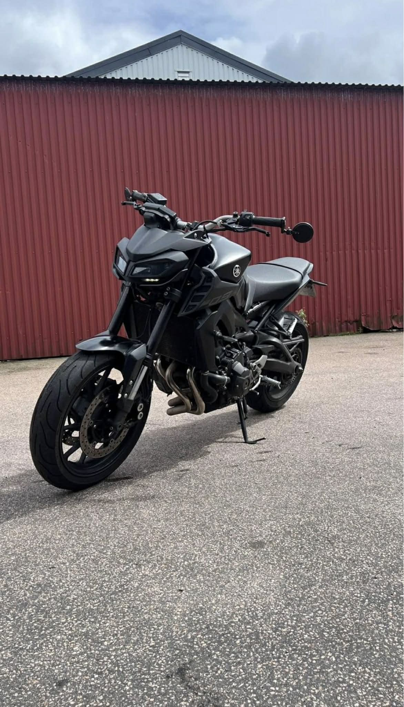

Family and friends
For me, relationships with family and friends are a foundation in life. In the right environment, people can grow, develop and become stronger versions of themselves.
I get energy from social contexts, and spending time with the people close to me gives me joy, balance and motivation.
Motorcycle riding
In autumn 2024, I got my license for heavy motorcycles, something I had looked forward to for a long time.
During the summer, I enjoy longer rides, preferably along roads near the sea. For me, it is a strong feeling of freedom.

Technology and gaming
My interest in technology and games has been with me since childhood.
When I was around 8 or 9 years old, many people at school played RuneScape, and it made me curious about how games actually worked behind the scenes.
I started my own private server by opening ports at home and configuring Java files, which became my first practical experience with technology, servers and system administration.